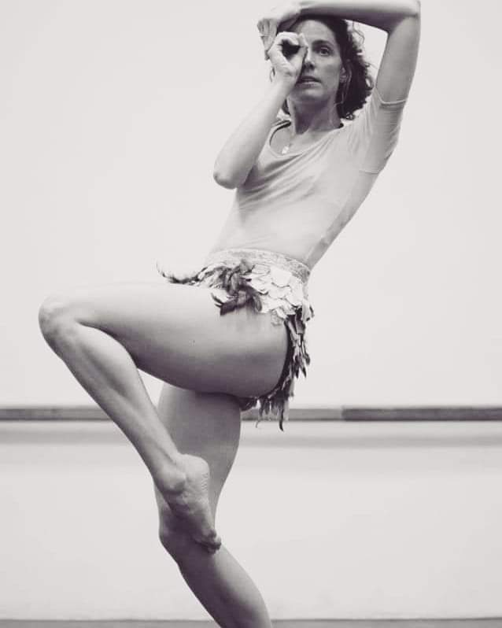
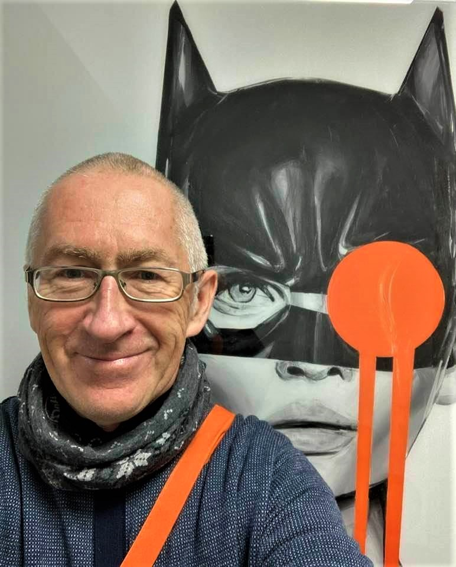

Eventy
Archiwalne
DZIEŃ OTWARTY - 3 września 2022 r.
DARMOWE LEKCJE ŚPIEWU
PRÓBA OTWARTA CHÓRU ESQUILO - godzina 11:00!
Oferta kierowana jest do dzieci w wieku od siedmiu lat, młodzieży oraz dorosłych - bez ograniczeń wiekowych.
Nasze lokalizacje (Kraków):
ul. Warszawska 3 oraz ul. Wiślna 12.
Jesteś zainteresowany?
Zadzwoń: 666 685 606 lub napisz: kontakt@ilonastudio.pl
WARSZTATY Z NATALIĄ IWANIEC: GAGA/PEOPLE I IMPROWIZACJA
9 lipca 2022 r.
10:00 - 13:00
Miejsce wydarzenia:
RYNEK.przestrzeń - Sala Balowa
Adres: Rynek Główny 34, 30-010 Kraków
Podczas warsztatów skupimy się na przyjemności w ruchu, na przekraczaniu własnej strefy komfortu i na wspólnym odkrywaniu świata tańca.
Jeśli lubisz się ruszać lub jeszcze zwyczajnie o tym nie wiesz, a dodatkowo masz ukończone 16 lat to te warsztaty są właśnie dla Ciebie!
Rozkład jazdy:
- lekcja GAGA/PEOPLE
- improwizacja
- poszukiwania
- wspólny taniec
- przestrzeń do ruchu i rozmowy
Koszt: 120 zł
Cena dla Uczniów 'Ilona Szczepańska - Studio Piosenki': 100 zł
Zgłoszenia drogą elektroniczną na adres mailowy: kontakt@ilonastudio.pl
W tytule wiadomości prosimy wpisać: GAGA/PEOPLE
Ilość miejsc ograniczona.
Ostateczna rezerwacja następuje po wpłaceniu bezzwrotnej zaliczki w wysokości 50 zł.
Podczas nadsyłania zgłoszeń prosimy o zaznaczanie czy jest się osobą pełnoletnią, czy też nie.
Natalia Iwaniec
Absolwentka wiedzy o teatrze na Uniwersytecie Jagiellońskim w Krakowie i Studium Animatorów Kultury we Wrocławiu (specjalność: taniec).
Tancerka, choreografka, pierwsza w Polsce certyfikowana nauczycielka GAGA!!!
Prowadziła zajęcia na licznych festiwalach tanecznych w Polsce i za granicą, uczyła m.in. w Rambert School of Ballet and Contemporary Dance (zarówno w szkole, jak i profesjonalnym zespole), Trinity Laban Conservatory of Music and Dance, Central Europe Dance Company w Budapeszcie.
Uczestniczyła w prestiżowym projekcie-warsztacie dla tancerzy u choreografki Yasmeen Goddder (Tel Aviv). Stworzyła choreografie do wielu spektakli m.in. dla Teatru im. Williama Horzycy w Toruniu, Teatru Migro i Capelli Cracoviensis w Krakowie.

Fot. Monika Kozłowska
WARSZTATY Z PIOTREM ŁASKIM - TECHNIKI ODDECHOWE I RELAKSACYJNE
Jesteś początkującym wokalistą lub instrumentalistą i na samą myśl o publicznym występie ogarnia Cię paraliżujący strach?
Jesteś już doświadczonym wykonawcą, ale ciągle borykasz się ze stresem towarzyszącym byciu na scenie?
Jesteś osobą, która zwyczajnie interesuje się technikami oddechowymi?
Te warsztaty są właśnie dla Ciebie!!!
7 maja
Godzina: 17:00
Czas trwania: 1,5h
Adres:
ul. Zarudawie 11, 30-144 Kraków
Koszt: 70 zł
Zgłoszenia drogą elektroniczną na adres mailowy: kontakt@ilonastudio.pl
W tytule wiadomości prosimy wpisać: ODDECH
Ilość miejsc ograniczona.
Ostateczna rezerwacja następuje po wpłaceniu bezzwrotnej zaliczki w wysokości 20 zł.
Udział tylko dla osób pełnoletnich.
Piotr Łaski (Omkar)
Nauczyciel jogi, założyciel ‘Odrobiny Dobrej Woli’ - afiliowanej Szkoły Jogi metodą Sivanandy, gdzie od roku 2010 prowadzi zajęcia dla początkujących, zaawansowanych i kobiet w ciąży. W latach 2005 - 2010 prowadził również zajęcia w Szkole Jogi Ananda.
Absolwent Akademii Wychowania Fizycznego w Krakowie: Kultura Fizyczna Osób Starszych - studia I stopnia. Lipiec 2021 obrona pracy licencjackiej: "Modyfikacja klasycznych zajęć jogi metodą Sivanandy na potrzeby osób starszych"
Ponadto uczestnik wielu kursów:
Teachers’ Training Course w Swentoji, Palanga na Litwie zorganizowany przez International Yoga Vedanta Center - tytuł Yoga Siromani (klejnot korony Jogi) - 2005 rok
Advanced Teachers’ Training Course w Indiach, zorganizowany przez International Yoga Vedanta Center - tytuł Yoga Acharya, Master of Yoga, M.Y - 2007 rok
Warsztat Sztuki Kontemplacji zorganizowany przez Akademię Kultury Duchowej Leona Zawadzkiego i Marii Pieniążek - 2005 - 2007
Kurs mantr i pranayam (technik oddechowych) Raviego Javalgekara (autora książek o ayurvedzie i jodze leczniczej) - 2007 rok
Seminarium Jogi Klasycznej w Anandzie, Leona Zawadzkiego i Marii Pieniążek - 2009 - 2010
Teachers’ Training Course w Orzechowie Morskim koło Ustki - karma joga - 2007 - 2018 (od 2012 prowadzenie zajęć dla nauczycieli z grupy polskiej)
TTC Refresfer - czerwiec 2013 - Orleans, Francja
W życiu prywatnym pasjonat muzyki oraz sztuk wszelakich. Entuzjasta śpiewu, tenor Krakowskiego Chóru Mieszczańskiego. Człowiek obdarzony poczuciem humoru najwyższych lotów.
